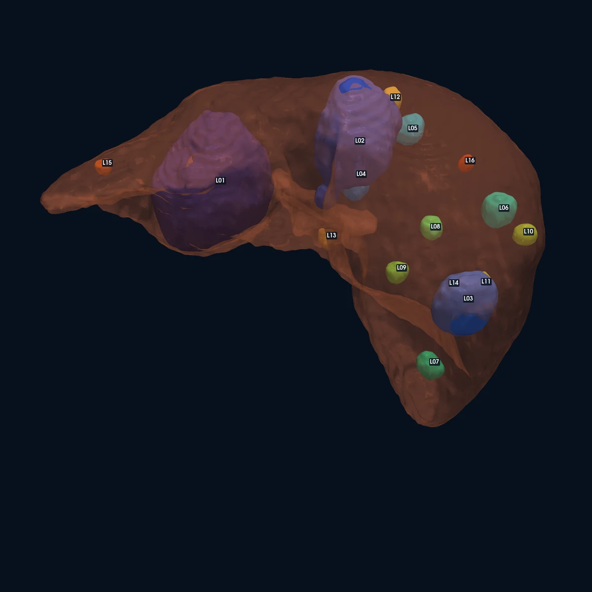
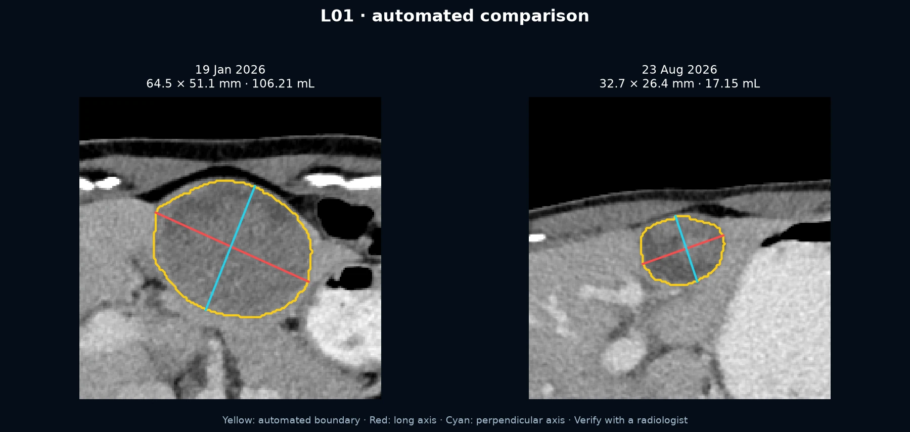

Loading…
CT comparison timeline
A clearer view of every liver lesion.
Explore a touch-enabled 3D liver reconstruction, lesion-level measurements, interval comparisons, and annotated source images in one responsive dashboard.
Image-only summary: Loading the latest comparison…

Latest tumor burden—
Longitudinal imaging
Choose any two CT dates
The default comparison uses the first available CT and the latest available CT.
→
At a glance
Disease burden dashboard
Measurements are generated from automated 3D masks and should be treated as preliminary.
Loading…
Loading…
Matched / present in either selected CT
Tumor burden
Percentage of liver volume
—Earlier
—
—Later
—
Change——
Interpretation
Key observations
- …Loading analysis
Preparing the selected comparison.
Latest CT · 23 Aug 2026
Interactive 3D anatomy
This 3D reconstruction comes from the latest CT. The translucent liver and each colored lesion are separate high-resolution objects.
Loading interactive anatomy…
Volume distribution
Which lesions drive total burden?
The two largest lesions account for the great majority of segmented tumor volume.
Lesion explorer
Measurements and source-image comparisons
Select any card for a full-resolution comparison and detailed metrics.
Designed clinical-style report
Share the complete validated PDF
Includes the four-date timeline, per-lesion trends, annotated comparisons, deterministic registration evidence, independent reconstruction-AI checks, attenuation proxies, vessel proximity, methodology, and safety limitations.

Clinical safety notice
This dashboard is a computer-assisted visualization, not a radiologist-signed diagnosis, formal RECIST assessment, or surgical-planning system. Do not use it alone to start, stop, or alter treatment. Small lesions, lesion matching, and low-attenuation estimates require specialist review.